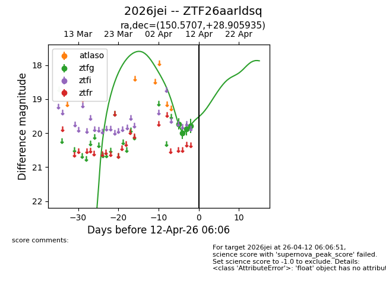
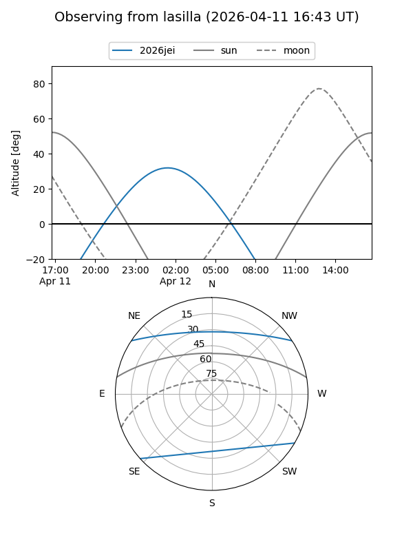
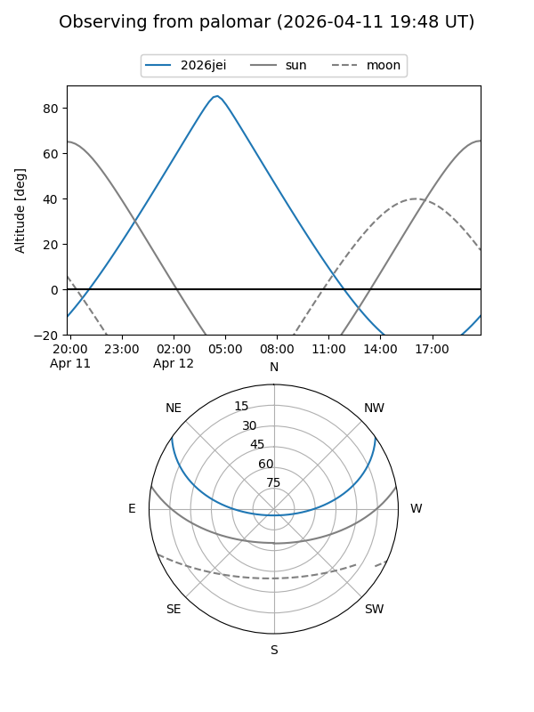
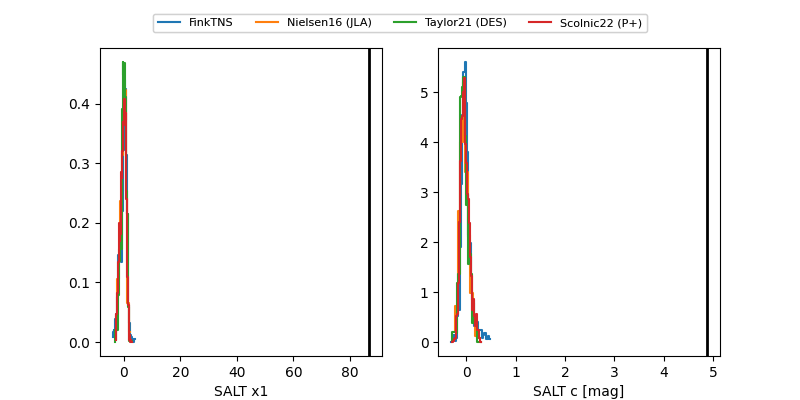

2026jei
Target 2026jei at 2026-04-12 06:15
Aliases and brokers:
FINK: link
Lasair: link
ALeRCE: link
TNS: link
YSE: link
alt names
ZTF26aarldsq (ztf,fink_ztf)
2026jei (tns,yse)
Coordinates:
equatorial (ra, dec) = 150.5707,+28.90593
equatorial (HMS+DMS) = 10:02:16.98,+28:54:21.37
galactic (l, b) = (200.0325,+52.82239)
Flags:
likely cv
Photometry:
last ztfg=19.79
4 ztfg detections
Lightcurve

Visibility


Additional plots
